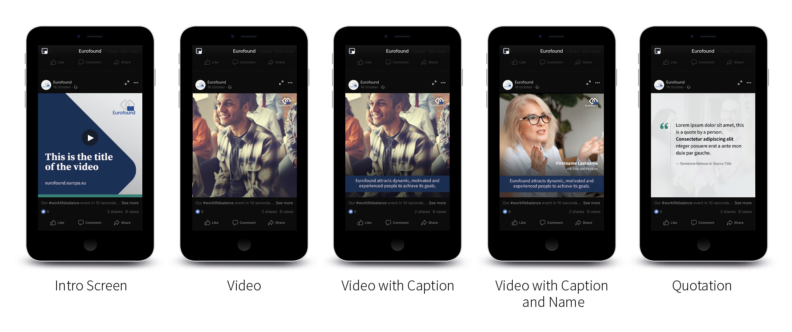
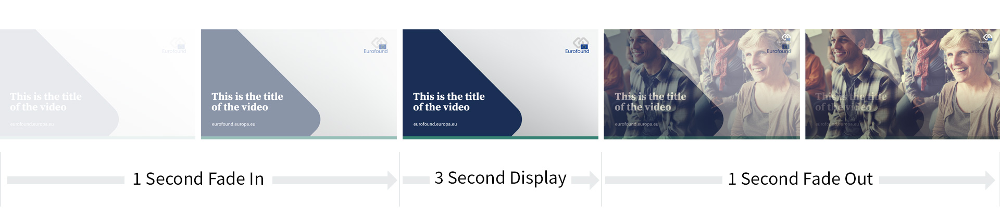
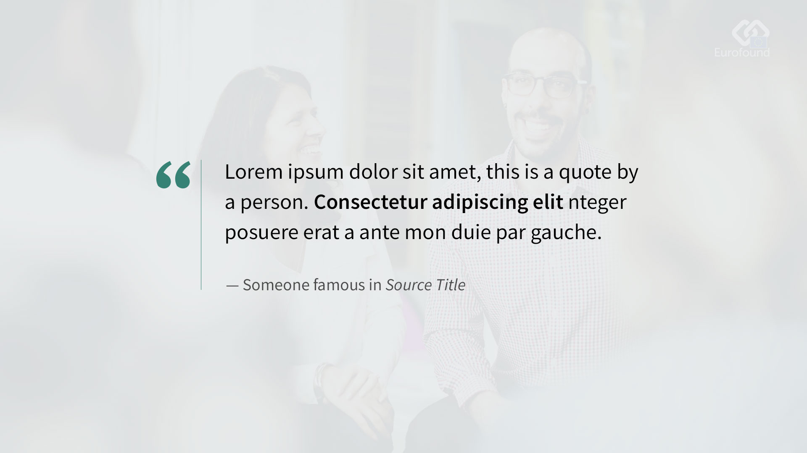
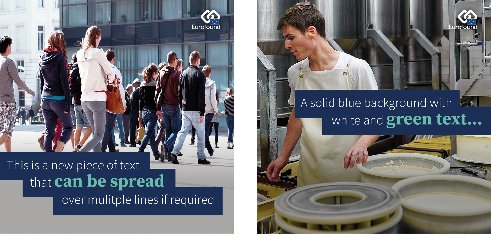
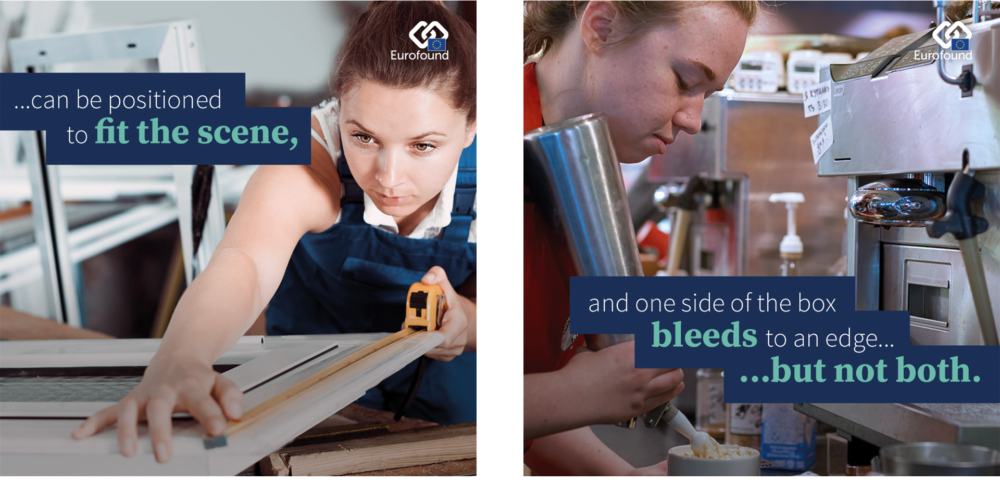
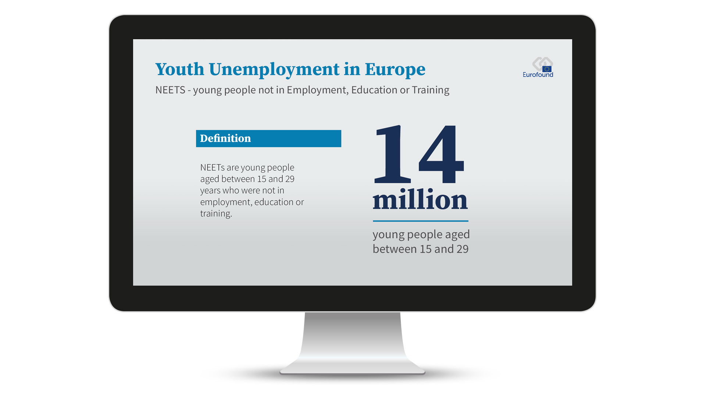
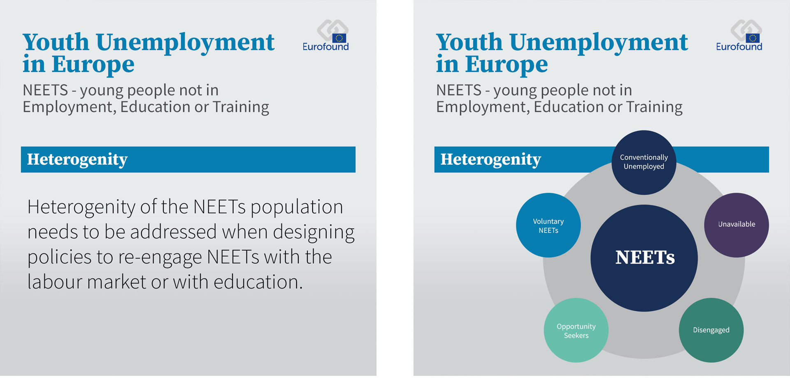

European Foundation |
The tripartite EU agency providing knowledge to assist |
European Foundation |
The tripartite EU agency providing knowledge to assist |
Video content is pulled into the Eurofound website through our YouTube Channel. YouTube uses 16:9 aspect ratio players, so all videos should be output as such to avoid pillar boxes (black bars to the left and right) or letter boxes (black bars at the top and bottom) from being displayed.
YouTube recommends the use of MP4 video using the H.264 video codec. Content should be uploaded to YouTube using the same frame rate used during recording and any interlaced content should be de-interlaced before uploading.
Further information can be obtained from Google's YouTube support page.
Standard 16:9 video shown fullscreen
Access to social media through the use of mobile devices is increasing year on year. As of January 2018 the global average user percentage when compared to desktops stood at 39%, slightly below the average for Western Europe (44%) and Northern Europe (57%). Although Eastern Europe currently sits below the global average with just 37% of users accessing social media through mobile devices, the MOVR Mobile Overview Report from 2014 found that 94% of ALL mobile users hold their device vertically whilst accessing social media. The opportunity for square and vertical video formats has arrived.
It is recommended to work with a 1:1 square 1080px sized video using a 30fps frame rate. This will ensure anything created can be used on Facebook and Twitter with no issues.
Again the use of MP4 video using the H.264 video codec is recommended.
Although the number of users taking advantage of video content including audio is on the increase, use of captions is still recommended. Where audio is used, the use of the AAC audio codec is recommended to deliver an optimum user experience

1:1 square video shown on mobile device
It is recommended to work with a 9:16 vertical 1080 x 1920px sized video using a 30fps frame rate. Again the use of MP4 video using the H.264 video codec and AAC audio where applicable is recommended.
Further information for specifications of different social platforms is available here.
9:16 vertical video shown on mobile device
The basic design principles for video remain the same whether it's for 16:9, 1:1 or 9:16 format outputs.
Where required, a video introduction screen can be added. The screen should appear using a simple fade and will contain the title of the video. After three seconds, the intro screen should fade directly into the first frame of the video content.

Video is displayed with a dark gradient overlay to the bottom and a small Eurofound logo sitting in the top right hand corner. The logo is positioned so as to allow room for image captions and YouTube overlays (see below).
Captions sit on top of an EF Navy background which is displayed at 93% opacity. Captions are set in Source Sans Pro Regular, center aligned, coloured white with a font size of 48pt and 54pt leading.
Captions are also positioned so that upon screen mouseover, the YouTube overlay doesn't interfere with the displayed content.
Speaker details are positioned to sit directly above video captions and aligned right with the Eurofound logo. The speaker's name is set in Source Sans Pro Bold, coloured white with a font size of 48pt with 54pt leading. The job title and position are set in Source Sans Pro Light, coloured white with a font size of 36pt and 54pt leading.
Speaker quotes are displayed on top of an EF Silver background displayed at 93% opacity. The quote is set in Source Sans Pro Regular, coloured black with a font size of 52pt with 72pt leading. The accreditation is set in Source Sans Pro Regular, coloured EF Charcol with a font size of 40pt and 48pt leading.

The closing ident utilises the animated ident used on existing Eurofound video content.
Footage can have text overlays added to add impact and grab the viewers attention. This is also helpful as no dialogue soundtrack is required, the message being conveyed by the on-screen prompts.
Text overlays can take on any shape, but a few simple rules should be followed...
Text can be spread over multiple lines, but should be as snappy as possible. It is preferable to split long sentances over multiple scenes as opposed to displaying too much text at once.
16:9 Text Overlay video shown fullscreen.
Across multiple lines, text should cascade from left to right. The text should sit on a solid EF Navy background and one of the edges should bleed. Vertically the text can be positioned anywhere to best suit the footage.
The main body copy is laid in white, Source Sans Pro at 60px with highlights being pulled out in 80px Source Serif Pro Bold coloured EF Mint. All leading is 80px.


1:1 Text Overlay video
Infographic style videos are a great way of quickly presenting visual representations of information, data or knowledge.
Infographics can take on many forms, but a few simple rules should be followed...

16:9 Infographic style video shown fullscreen.
Information should be presented in an easy to understand format, condensing large amounts of information into a form where it will be more easily absorbed by the reader. Information should be presented on an EF Silver background, using the Eurofound graphical guidelines (text styles, colours etc) as a guide.

1:1 Infographic video style
A Photoshop guide template of all video content can be downloaded from here.